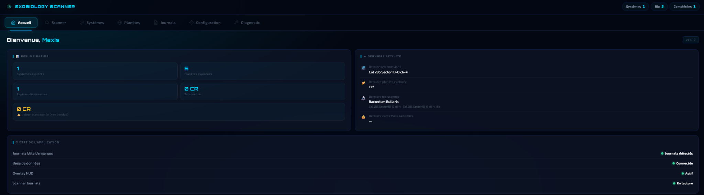
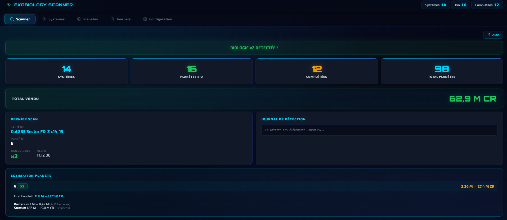
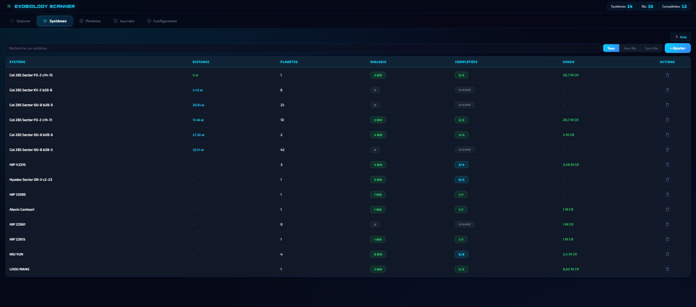
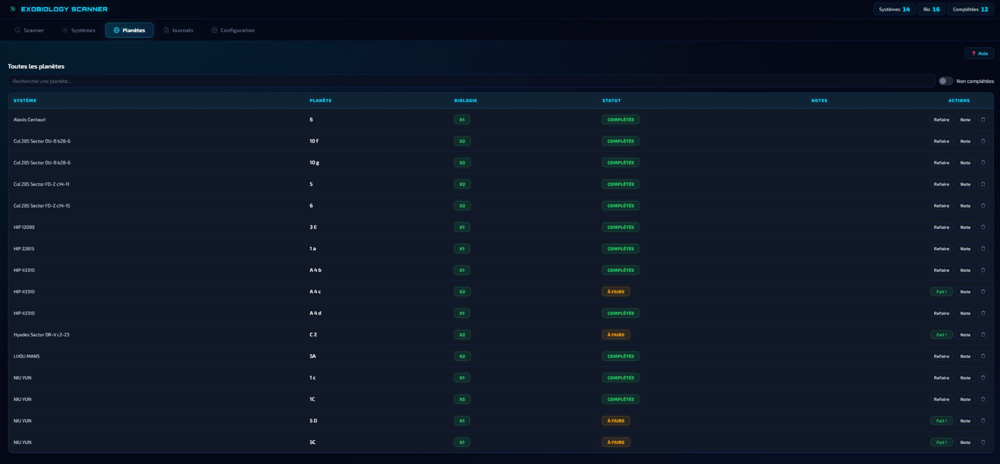
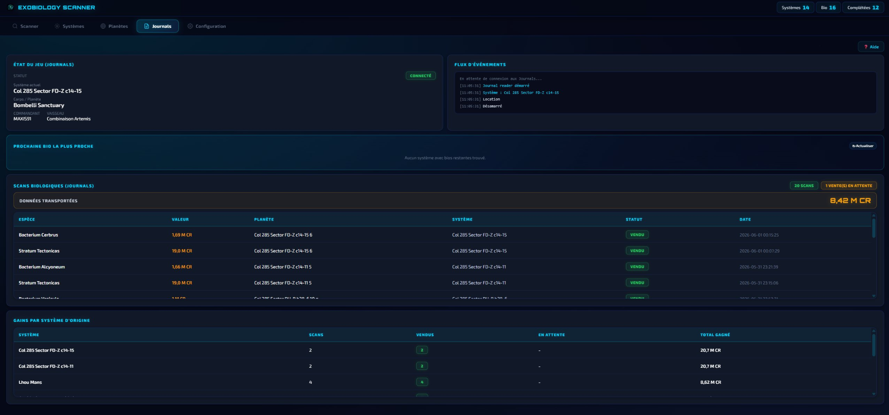
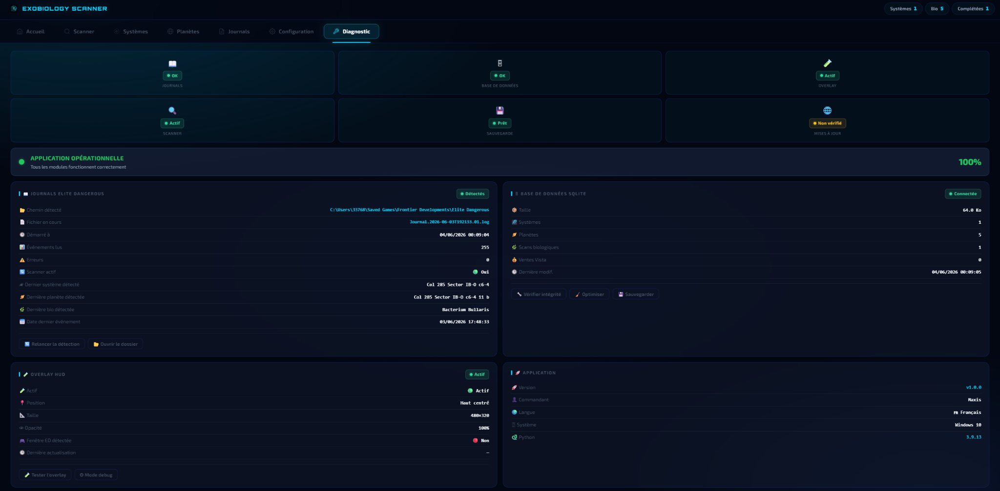

EXOBIOLOGY SCANNER
Ne perdez plus jamais une bio rentable.
Overlay en jeu, suivi automatique, valeurs Vista Genomics en temps réel.
Votre assistant directement dans le jeu
L'overlay Exobiology Scanner s'affiche par-dessus Elite Dangerous de façon transparente et non intrusive. Il sait exactement quand apparaître et quand s'effacer.


Explorez chaque fonctionnalité en détail
Chaque onglet répond à un besoin précis de l'explorateur exobiologiste.
Overlay intelligent en jeu
L'assistant exobiologie directement intégré à Elite Dangerous. Toutes les informations essentielles sont affichées en temps réel pendant vos explorations, sans quitter le jeu.
- Progression des scans : 1/3 → 2/3 → 3/3
- Distance minimale avant le prochain échantillon
- Notification "Scan possible"
- Valeur estimée de l'espèce détectée
- Informations contextuelles en temps réel
- Overlay transparent et non intrusif
- Compatible Elite Dangerous Odyssey
- Apparition automatique uniquement lorsque nécessaire
Tableau de bord
La page d'accueil centralise toutes vos statistiques d'exploration en un coup d'œil. Dès le lancement, vous savez exactement où vous en êtes.
- Statistiques globales : systèmes, planètes, bios, ventes
- Valeur transportée — données non encore vendues à Vista Genomics
- Nombre d'espèces uniques découvertes
- Dernier système et dernière planète visités
- État du scanner et des Journals en temps réel
- Accès rapide aux scans non vendus

Scanner
Le centre de votre activité d'exobiologie. Tout est automatique via les Journals.
- Statistiques globales en temps réel
- Total vendu avec format compact
- Estimation planète (fourchette min/max par genre)
- Données transportées (valeur à risque)
- Journal de détection en direct

Systèmes
Vue d'ensemble de tous les systèmes réellement explorés.
- Systèmes vérifiés uniquement (honk, DSS, bio)
- Distance en temps réel
- Progression des bios et filtres avancés
- Badge SCANNÉ pour systèmes sans bios

Planètes
Suivi détaillé planète par planète.
- Statuts : Complétée / À faire
- Progression bio_done / bio_count
- Notes personnelles et actions rapides

Journals
Historique complet de vos scans et ventes.
- Statuts : NON VENDU / VENDU / PERDU
- Données transportées (montant à risque)
- Gains par système
- Gestion automatique de la mort

Diagnostic
L'onglet Diagnostic vous donne une vue complète de l'état de l'application. Idéal pour vérifier que tout fonctionne correctement ou pour préparer un rapport de support.
- Score global — état de tous les modules en pourcentage
- État des Journals : dossier, fichier actif, événements lus, erreurs
- Dernier système, planète et bio détectés
- État de la base de données SQLite
- Overlay : actif, fenêtre Elite Dangerous détectée
- Temps de fonctionnement depuis le lancement
- Vérification des mises à jour
- Export rapport JSON + TXT lisible sur Discord
- Outils de maintenance : intégrité, optimisation, sauvegarde

Configuration
Paramètres, overlay et sauvegarde.
- Mode debug overlay (Ctrl+Shift+O)
- Export / Import JSON
- Backup automatique avant import
- Centre d'aide intégré
Pourquoi utiliser Exobiology Scanner ?
Tout ce dont vous avez besoin pour ne jamais manquer une découverte et maximiser vos gains Vista Genomics.
Overlay intelligent en jeu
Un HUD transparent s'affiche directement dans Elite Dangerous. Progression, distance, valeur — sans jamais quitter le jeu.
Valeurs Vista Genomics en temps réel
Connaissez instantanément la valeur de chaque espèce — base, First Footfall ×5 et colony range inclus.
Historique complet des scans
Chaque espèce scannée est tracée avec son statut NON VENDU / VENDU / PERDU. La mort du joueur est détectée automatiquement.
Suivi automatique des Journals
L'application lit vos fichiers Journal Elite Dangerous en temps réel. Aucune saisie manuelle, tout est automatique.
Export / Import de vos données
Sauvegardez votre progression en JSON, restaurez-la sur un autre PC. Backup automatique avant chaque import.
Vos données sous votre contrôle
Aucun compte requis. Toutes vos données d'exploration sont stockées localement dans une base SQLite et exportables à tout moment.
Opérationnel en 3 étapes
Exobiology Scanner est conçu pour être prêt à l'emploi dès l'installation. Aucune configuration complexe, aucune dépendance.
Installez Exobiology Scanner
Téléchargez et lancez l'exécutable. Aucune installation complexe, pas de dépendances à gérer. L'application configure automatiquement le chemin de vos Journals.
Lancez Elite Dangerous
Démarrez le jeu normalement. Exobiology Scanner détecte automatiquement la session en cours et commence à lire vos Journals en temps réel.
Explorez et scannez
L'overlay apparaît dès que vous posez les pieds sur une planète avec des bios. Vos découvertes sont enregistrées automatiquement. Profitez de l'exploration.
Pourquoi faire confiance à Exobiology Scanner ?
Un outil transparent, respectueux de votre vie privée et conçu dans le respect des règles de Frontier Developments.
Aucun compte requis
Utilisez l'application librement, sans création de profil obligatoire. Les futures statistiques communautaires pourront rester anonymes.
Gratuit pour toujours
Aucun abonnement, aucune limitation cachée, aucune fonctionnalité premium. Tout est gratuit, partout.
Données stockées localement
Vos données d'exploration sont conservées sur votre PC dans une base SQLite locale, exportables et sous votre contrôle.
Lecture seule des Journals
Le logiciel lit uniquement les fichiers Journal générés par Elite Dangerous. Aucune modification du jeu.
Respect de vos données
Vos données d'exploration restent sous votre contrôle et peuvent être exportées à tout moment.
Aucun accès aux serveurs du jeu
L'application ne communique pas avec les serveurs de Frontier Developments et ne modifie pas Elite Dangerous.
100% Gratuit — Pour toujours
Exobiology Scanner est et restera entièrement gratuit. Pas d'abonnement, pas de compte, pas de limitation. Votre progression vous appartient.
Questions fréquentes
Tout ce que vous devez savoir avant de télécharger.
Ce qui arrive bientôt
Exobiology Scanner est un projet actif et en constante évolution. Voici ce qui est prévu pour les prochaines versions.
Traduction multilingue
Interface complète en anglais, espagnol, allemand
BientôtStatistiques avancées
Graphiques de progression, crédits par session
BientôtAméliorations de l'overlay
Personnalisation de la position et de la taille
BientôtMode expédition
Planification de routes exobiologiques optimisées
PlanifiéCarte des systèmes
Visualisation 3D de vos explorations dans la galaxie
PlanifiéPartage communautaire
Partagez vos meilleures découvertes avec la communauté
À l'étudeChangelog
Suivez l'évolution d'Exobiology Scanner au fil des versions.
- Première version publique
- Overlay en jeu — HUD transparent et non intrusif
- Suivi automatique via les Journals Elite Dangerous
- Gestion des systèmes explorés
- Gestion des planètes avec suivi des bios
- Historique complet des scans biologiques
- Estimation des valeurs Vista Genomics en temps réel
- Import / Export JSON des données
- Sauvegarde automatique de la base de données
- Centre d'aide intégré
Rejoignez la communauté
Partagez vos découvertes, remontez des bugs ou participez au développement d'Exobiology Scanner.
Discord
Échangez avec d'autres commandants, signalez des bugs, suivez les annonces.
Rejoindre le Discord